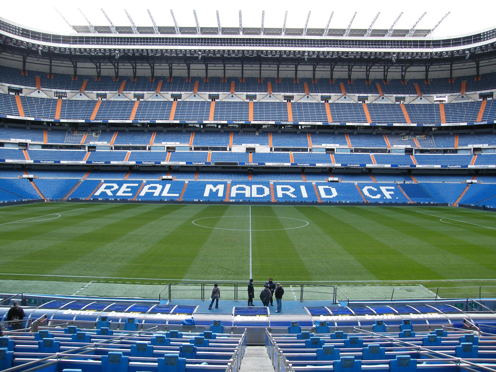

El Estadio Santiago Bernabéu es un recinto deportivo propiedad del Real Madrid Club de Fútbol, situado en pleno paseo de la Castellana, en el distrito de Chamartín de Madrid, España. Se inauguró el 14 de diciembre de 1947 y su aforo actualmente es de 81.044 espectadores.1El estadio está catalogado por la UEFA con la máxima distinción, «estadio de élite». El 22 de junio de 1944, el Banco Mercantil e Industrial concede un crédito al presidente Santiago Bernabéu por mediación de Rafael Salgado, presidente de la entidad bancaria, para adquirir los terrenos colindantes al viejo Estadio de Chamartín (obra del arquitecto José María Castell). El viejo Estadio de Chamartín había quedado en muy mal estado tras la Guerra Civil aunque el Real Madrid siguió jugando allí hasta 1946. El 5 de septiembre de 1944 se presentó en el Palacio del Círculo de Bellas Artes la maqueta de los arquitectos Manuel Muñoz Monasterio y Luis Alemany Soler como la estructura que daría forma al estadio, en cuyo diseño también intervino el ingeniero de caminos Carlos Fernández Casado. El 27 de octubre de 1944 se bendicen los terrenos y el propio Santiago Bernabéu coloca la primera piedra.7 Mientras, el estadio se construía sobre una parte del solar antiguo y en los terrenos de Villa Ulpiana, el equipo blanco jugó como local en el Stadium Metropolitano en la temporada 1946-47 y en cinco jornadas de la temporada 1947-48. El estadio se inauguró el día 14 de diciembre de 1947, con un partido amistoso entre Real Madrid y C.F. Belenenses de Portugal, bajo el nombre de «Estadio Real Madrid Club de Fútbol» aunque siguió siendo conocido entre los aficionados como «Nuevo Estadio Chamartín» o simplemente «Chamartín». El recinto poseía una capacidad de 75 145 espectadores, de los cuales 27 645 poseían asientos (7125 cubiertos) y 47.500 de pie (2000 cubiertos). Antes del partido, se organizó una ceremonia de inauguración. En primer lugar, se celebró una misa en la que estuvieron presentes el presidente, los miembros de la directiva, algunos socios y otros invitados para seguidamente bendecir el estadio. Tras salir al campo, los jugadores del equipo portugués fueron ovacionados por los 50.000 espectadores que estuvieron presentes. A continuación, se entonó el himno nacional de Portugal y seguidamente sonó el himno nacional de España con los dos equipos alineados en el terreno de juego. Después, se procedió a los protocolarios intercambios de banderines por parte de los capitanes y las fotografías de rigor con el equipo arbitral.
